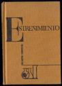

Estreñimiento
 De: La Frikipedia, la enciclopedia extremadamente seria.
De: La Frikipedia, la enciclopedia extremadamente seria.
 Antiguo volúmen encontrado en la biblioteca de Alejandría.
«Aaa, es estreñimiento... Qué duro es esto...»
~ un poeta estreñimiento
El Estreñimiento (Yanokago en japonés) es la Zienzia de guardarse la mierda para uno mismo.
Creación
El origen del estreñimiento viene de antiguas culturas poco conocidas, aunque su origen es muy dudoso. Muchos pueblos se atribuyen la invención de este maquiavélico instrumento, entre los que se encuentran:
- Los orcos; sí hombre, sí, ¿nos os habéis fijado en la cara de estreñidos que traen siempre?
- Los egipcios; porque los egipcios lo inventaron todo, que lo sé yo.
- Los andorranos; según cuentan las crónicas antiguas, desde hacía mucho tiempo los adorranos celebraban cada cierto tiempo, un ritual, llamado la fiesta del cagallón duro, en la que se llevaban a cabo danzas tribales y acciones estreñidas.
- Los árabes, que trajeron a la Península Ibérica muchas cosas, entre ellas el estreñimiento.
- En algunos templos mayas, se han hallado restos de personas con muecas típicas de un momento de apuro.
- Los asiáticos, si hombre si fijate en su cara, ¿nos ves esa expresión de estreñido?
Modos de aplicación
Les proponemos una guía de ayuda para llevar bien esos momentos de apuro que bien que le fastidian a uno:

Esta es la mueca perfecta para el momento culminante de la acción, Practícala y colecciónala en tu quiosco.
- En primer lugar, siéntense en la taza del váter, bien preparados para la ocasión, con un libro/revista bajo el brazo, y el kit del estreñido, que consta de desatascador, rollo de doble capa
- Procure estar sentado en la posición adecudada, para evitar salpicaduras o salidas poco honrosas de la llamada caca.
- Apriete con fuerza el vientre hacia dentro y hacia fuera, sin piedad ni decoro. hasta que sienta una pequeña escapada de gas, llamada vulgarmente Pedo.
- Tras ella, puede permitirse unos minutillos de descanso, para lo que deberá usar el kit del estreñido y la revista.
- Ahora viene la parte difícil, procúrese una pinza y unos tapones en oído, para no oírse a sí mismo.
- Apriete con fuerza en el punto caliente del vientre, y no pare, no pare, ¡no pare!.
- ¡¡¡Felicidades!!! ¡¡¡Es un chorizo!!!
- Ahora tire de la cadena varias veces hasta que la criatura abandone la sala.
Autor(es):
- Nexo
- Kenedhor
- JALAJANDRO
- Varitomeyamoyo
- Veni Vidi Vici
Frikipedia 2005-2016, Licencia
GFDL 1.2 - Extraído por FrikiLeaks